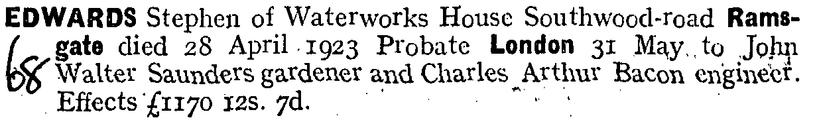
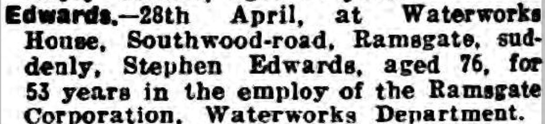
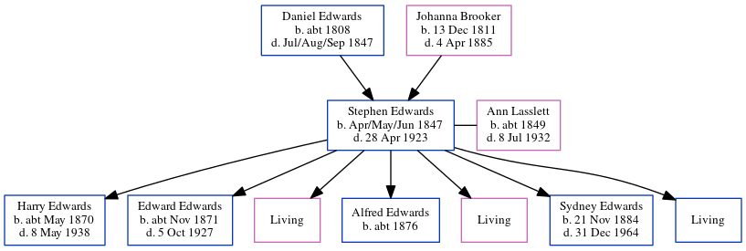

Stephen Edwards 1847 - 1923
[ Home ] | [ Calendar ] | [ Surnames Index ] | [ Errors ] | [ Family History ]A stationery engine driver and the child of Daniel Edwards (a labourer) and Johanna Brooker (a pauper char woman), Stephen Edwards, the three times great-uncle of Nigel Horne, was born in St Lawrence, Thanet, Kent, England in Apr/May/Jun 18471,2,3,4,5,6,7,8, was baptised there on 6 Jun 1847 and also married Ann Lasslett (with whom he had 7 children: Harry Walter, Edward Frederick, Florence Maria, Alfred W, Helen Gertrude, Sydney Horace and Percy Leopold, along with 3 surviving children) there on 26 Mar 18709.
During his life, he was living at Chapel Row, St Lawrence, Thanet, Kent, England on 30 Mar 185115; in Vessels, Misc Ships at Sea or Abroad, England in 18612; at Chapel Row on 2 Apr 187113 (the same place as his mother had been living on 30 Mar 1851); at his birthplace in 18814 (the same place as his father had been living in 1841); at Whitehall Waterworks, St Lawrence in Thanet on 3 Apr 188114 - less than a mile from his nephew John Lawrence who was living at 20 Southwood Terrace, St Lawrence in Thanet; West Dumpton in Thanet on 5 Apr 189112 - less than a mile from his great-niece Emily Lawrence who was living at 10 Claremont Gardens, Ramsgate, Kent and his great-nephew Edward Lawrence, great-nephew Walter Laurence and nephew James Lawrence who were living at 10 Claremont Gardens, Ramsgate, Kent -; at Waterworks Cottage, St Lawrence in Thanet on 31 Mar 190111 - less than a mile from his sister Johanna Edwards who was living at 3 Lorne Road, St Lawrence in Thanet, his niece Elizabeth Lawrence who was living at 3 Lorne Road, St Lawrence in Thanet - and his great-nephew Edward Lawrence who was living at 2 Lyle Terrace, St Lawrence in Thanet -; at Southwood Pumping Station, St Lawrence in Thanet on 2 Apr 191110; and at Waterworks House, Southwood Road, St Lawrence in Thanet in 1923.
He died on 28 Apr 1923 at Waterworks House, Southwood Road, Ramsgate, Kent.
Parents
- Daniel was born c. 1808
- Johanna was born on 13 Dec 1811
Children
- Harry Walter was born c. May 1870
- Edward Frederick was born c. Nov 1871
- Alfred W was born c. 1876
- Sydney Horace was born on 21 Nov 1884
Citations
- 1851 England Census Online publication - Provo, UT, USA: The Generations Network, Inc., 2005.Original data - Census Returns of England and Wales, 1851. Kew, Surrey, England: The National Archives of the UK (TNA): Public Record Office (PRO), 1851. Data imaged from the National
- 1861 England Census Online publication - Provo, UT, USA: The Generations Network, Inc., 2005.Original data - Census Returns of England and Wales, 1861. Kew, Surrey, England: The National Archives of the UK (TNA): Public Record Office (PRO), 1861. Data imaged from the National
- 1871 England Census Online publication - Provo, UT, USA: The Generations Network, Inc., 2004.Original data - Census Returns of England and Wales, 1871. Kew, Surrey, England: The National Archives of the UK (TNA): Public Record Office (PRO), 1871. Data imaged from the National
- 1881 England Census Online publication - Provo, UT, USA: The Generations Network, Inc., 2004. 1881 British Isles Census Index provided by The Church of Jesus Christ of Latter-day Saints © Copyright 1999 Intellectual Reserve, Inc. All rights reserved. All use is subject to the
- 1891 England Census Online publication - Provo, UT, USA: The Generations Network, Inc., 2005.Original data - Census Returns of England and Wales, 1891. Kew, Surrey, England: The National Archives of the UK (TNA): Public Record Office (PRO), 1891. Data imaged from The National
- 1901 England Census Online publication - Provo, UT, USA: The Generations Network, Inc., 2005.Original data - Census Returns of England and Wales, 1901. Kew, Surrey, England: The National Archives of the UK (TNA): Public Record Office (PRO), 1901. Data imaged from the National
- 1911 England Census Online publication - Provo, UT, USA: Ancestry.com Operations, Inc., 2011.Original data - Census Returns of England and Wales, 1911. Kew, Surrey, England: The National Archives of the UK (TNA), 1911. Data imaged from the National Archives, London, England.
- England & Wales, FreeBMD Birth Index, 1837-1915 Online publication - Provo, UT, USA: The Generations Network, Inc., 2006.Original data - General Register Office. England and Wales Civil Registration Indexes. London, England: General Register Office. © Crown copyright. Published by permission of the Cont
- England & Wales, FreeBMD Marriage Index: 1837-1915 Online publication - Provo, UT, USA: The Generations Network, Inc., 2006.Original data - General Register Office. England and Wales Civil Registration Indexes. London, England: General Register Office. © Crown copyright. Published by permission of the Cont
- 1911 Census for England & Wales - Findmypast (was age 63 and the head of the household)
- 1901 England, Wales & Scotland Census - Findmypast (was age 53 and the head of the household)
- 1891 England, Wales & Scotland Census - Findmypast (was age 43 and the head of the household)
- 1871 England, Wales & Scotland Census - Findmypast (was age 23 and the head of the household)
- 1881 England, Wales & Scotland Census - Findmypast (was age 33 and the head of the household)
- 1851 England, Wales & Scotland Census - Findmypast (was age 3 and the grand son of the head of the household)
Media
Stephen Edwards - probate

Thanet Advertiser May 5, 1923

England & Wales births 1837-2006 - BMD/B/1847/2/AH/000988/030
England & Wales deaths 1837-2007 - BMD/D/1923/2/AZ/000261/139
Kent, Canterbury Archdeaconry marriages 1538-1928 - GBPRS/CANT/M/97021770/1
England Marriages 1538-1973 - R_848394556
England & Wales marriages 1837-2008 - BMD/M/1870/1/AZ/000064/149
1851 England, Wales & Scotland Census - GBC/1851/0005890539
England Births & Baptisms 1538-1975 - R_885342068
England Births & Baptisms 1538-1975 - R_884653854
Kent Baptisms - GBPRS/CANT/B/96403440
Family Tree
Map
Generated by ged2site. Last updated on Jul 3, 2024
Known Issues
Death date (28 Apr 1923) has no citations
Date of baptism (6 Jun 1847) before date of birth (Apr/May/Jun 1847)
Residence record for 1923 contains no citation
1861: Not living with either parent in childhood when aged 14
May have been living with mother on 1881, but the addresses don't match or aren't detailed enough to be sure
Listed in the residence for 1923, but spouse Ann Lasslett is not